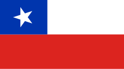

Tomás Gabriel Suárez Rojas
About me
My name is Tomás Gabriel Suárez Rojas. I am from Chile, and I am currently studying web development as part of my academic path. I enjoy learning how websites are built, especially how HTML, CSS, and JavaScript work together to create useful and visually appealing pages. My goal is to continue improving my programming skills and become a better software developer.

Chile

Chilean flag
Chile is a long and narrow country located in South America, between the Andes Mountains and the Pacific Ocean. It is known for its diverse landscapes, including deserts, forests, lakes, volcanoes, and glaciers. I am proud to be from Chile because of its culture, natural beauty, and the warmth of its people.